Versione: 0.3.1 | Code Guardian
Il presente documento descrive il Manuale Utente relativo al progetto Code Guardian, commissionato dall’azienda Var Group e realizzato dal gruppo di studenti Skarab Group nell’ambito del corso di Ingegneria del Software presso l’Università degli Studi di Padova.
CodeGuardian è un'innovativa piattaforma ad agenti finalizzata all’audit e alla remediation automatizzata delle vulnerabilità presenti nei repository di codice sorgente.
La piattaforma supporta attività di analisi statica del codice sorgente e di individuazione delle principali criticità di sicurezza, fornendo suggerimenti di correzione attraverso meccanismi automatizzati basati su modelli di linguaggio di grandi dimensioni (LLM), integrati nel workflow degli agenti per formulare e validare le correzioni.
Per garantire il corretto funzionamento e l'esperienza utente ottimale, si consiglia di utilizzare la piattaforma CodeGuardian su dispositivi che soddisfino i seguenti requisiti minimi di sistema e compatibilità del browser:
La piattaforma CodeGuardian si presenta con un'intuitiva schermata iniziale, dalla quale è possibile l'accesso diretto ai moduli di registrazione e autenticazione per iniziare ad ispezionare i propri repository.
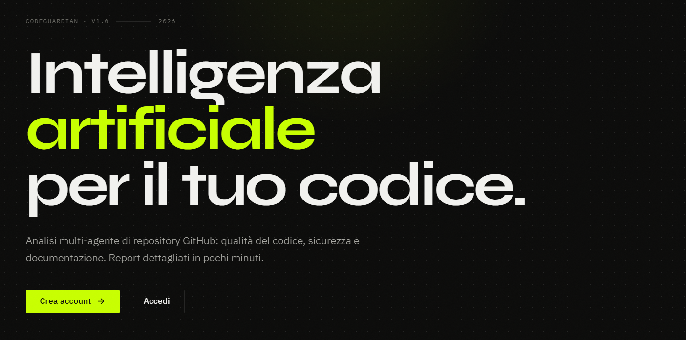
Per poter accedere agli strumenti di monitoraggio e ai report di CodeGuardian è necessario possedere un'identità verificata all'interno del sistema; ciò consente di mantenere protette le associazioni con i propri URL repository e l'eventuale tracciamento privato.
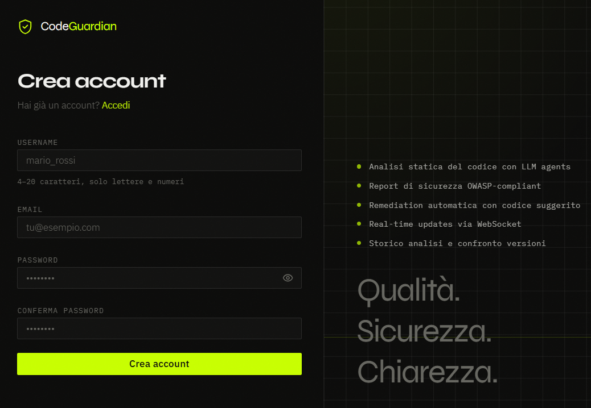
La creazione di un nuovo utente avviene tramite l'apposita schermata di registrazione, raggiungibile direttamente dalla pagina iniziale.
Per effettuare la registrazione è necessario:
Gli utenti precedentemente iscritti o coloro a cui è temporaneamente scaduta la sessione di navigazione possono ricollegarsi tramite la schermata di Accesso.
Fornendo l'indirizzo Email e la Password associata, la piattaforma autorizza istantaneamente l'accesso sbloccando i privilegi utente. In caso di errore o credenziali errate, il sistema restituirà l'avviso di "Credenziali non valide".
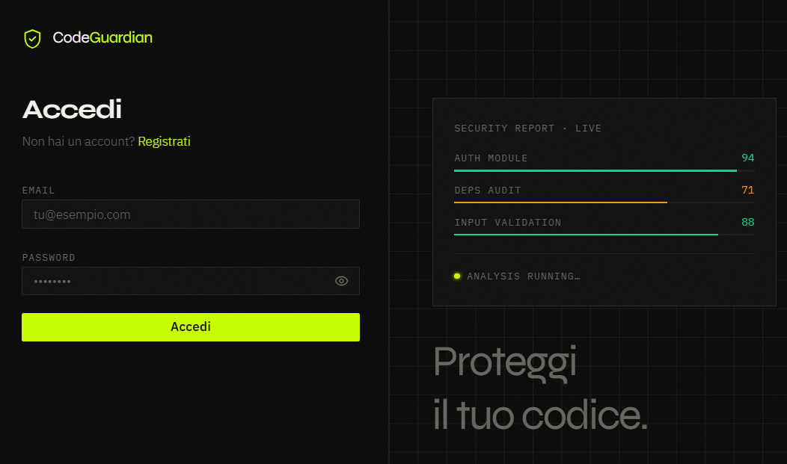
L'area impostazioni costituisce il pannello di controllo della gestione dell'Account.
Una procedura pratica per aggiornare la password di accesso. Per procedere è necessario compilare nell'ordine i campi previsti dalla schermata:
Rispettando sempre i pattern di sicurezza in vigore.
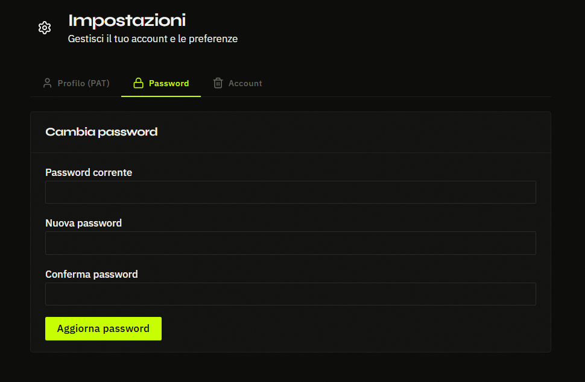
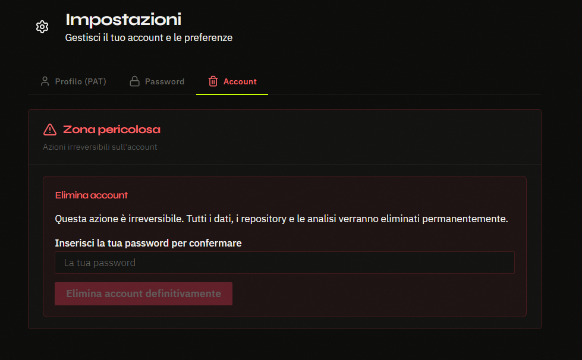
Un'operazione irreversibile concepita per tutelare la privacy. Prima di poter eseguire l'eliminazione, per motivazioni di sicurezza è tassativamente richiesto di compilare il campo vuoto digitando La tua password per confermare la propria identità.
Cliccando infine sul pulsante rosso Elimina account definitivamente, l'utente provvede a rimuovere in modo definitivo e permanente il profilo dal sistema CodeGuardian, venendo immediatamente revocato da qualsiasi diritto d'accesso.
La sezione Repository costituisce la dashboard principale da cui gestire i propri progetti.
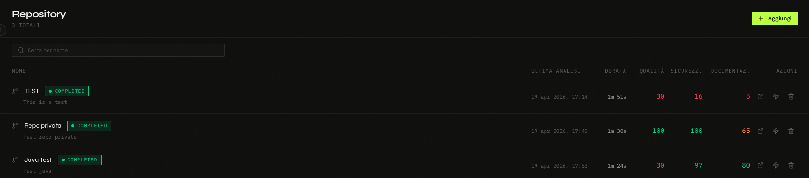
Aggiunta e Rimozione: È possibile visualizzare la lista dei repository importati. Per aggiungerne uno nuovo da ispezionare, è sufficiente inserirne l'URL GitHub. È possibile anche rimuovere i repository non più necessari tramite l'apposito pulsante.
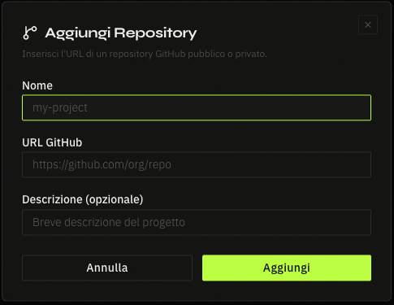
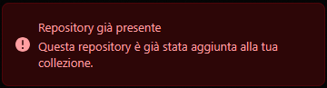
Repository già inserito: Se si tenta di aggiungere un repository già presente, il sistema restituirà un messaggio di errore indicando che il repository è già stato importato.
Esecuzione Analisi: Cliccando su uno specifico repository, si accede alla sua Pagina di Dettaglio. Da qui, l'utente può avviare l'ispezione automatica cliccando sul pulsante dedicato. L'interfaccia aggiornerà dinamicamente lo stato dell'analisi (avvio, in corso, completamento) fornendo un chiaro feedback visivo senza complicati caricamenti.
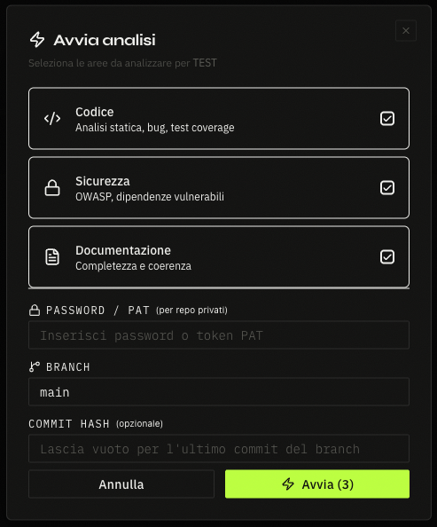
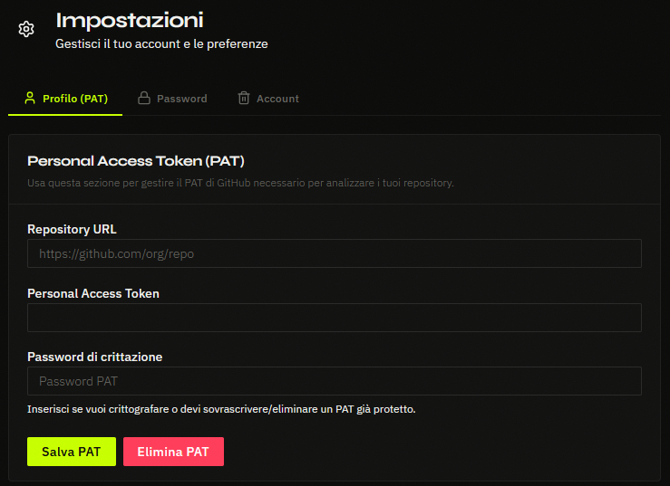
Configurazione del PAT: Per l'analisi di repository privati, è richiesto l'inserimento di un Personal Access Token (PAT). Il token va configurato nella sezione dedicata delle impostazioni, dove viene associato al repository e protetto da una password. Quest'ultima dovrà essere inserita dall'utente ad ogni avvio dell'analisi al posto del token: questo doppio livello di autenticazione garantisce la massima sicurezza nell'accesso ai dati sensibili.
Al termine, il report viene presentato a schermo suddiviso per metriche di qualità, scorecard generali e lista accurata delle vulnerabilità.
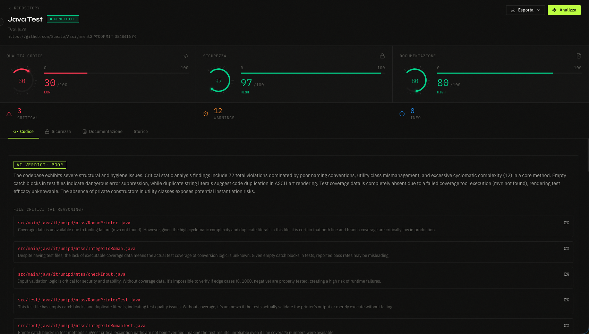
Per ogni scansione sono previste funzionalità di esportazione dirette scaricando il referto formattato in PDF oppure sotto forma di JSON strutturato.
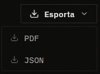
La schermata Storico raccoglie la traccia di tutte le scansioni ed ispezioni del codice precedentemente eseguite sulla piattaforma, relative all'utente attivo.
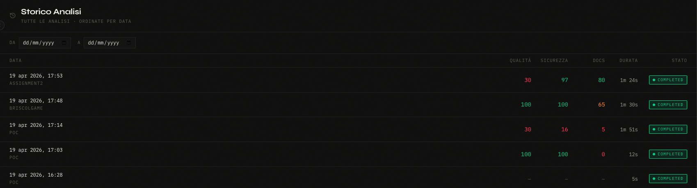
Questa prospettiva gestionale fornisce una panoramica focalizzata sugli scenari architetturali dei progetti caricati in CodeGuardian.
L'applicativo genera in tempo reale una Classifica di tutti i repository associati all'utente: vengono elencati gerarchicamente tenendo conto dello "Score di Qualità" generale derivante dai più recenti audit, permettendo in modo istantaneo di confrontare i progetti più robusti e quelli che richiedono maggiore attenzione.
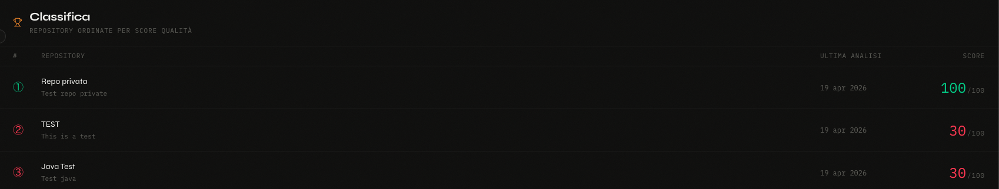
Questa breve sezione descrive il giusto comportamento da seguire per affrontare alcuni problemi che potrebbero verificarsi durante l'utilizzo della piattaforma CodeGuardian.
| Problema | Causa Probabile | Soluzione Suggerita |
|---|---|---|
| Analisi bloccata o annullata | Il repository ha dimensione superiore a 1GB oppure non è stata inserita la password per i repository privati. | Verificare la dimensione del codice sorgente. Se il progetto è privato, configurare il token di accesso e inserire la password associata all'avvio. |
| Impossibile aggiungere un nuovo repository | L'URL inserito non è formattato correttamente, non è raggiungibile, oppure il repository è già stato inserito. | Assicurarsi di copiare l'URL completo (es. https://github.com/...) senza spazi. Verificare nella Dashboard che il progetto non sia già monitorato dal sistema. |
| Errore durante la registrazione del profilo | L'indirizzo email inserito non è valido o risulta già in uso. | Controllare che l'email rispetti il formato standard. Se risulta già in uso, tornare alla pagina iniziale e procedere tramite la schermata di Accesso (Login). |
| Password dell'account dimenticata | L'utente ha smarrito le credenziali di accesso. | Non è possibile recuperarla in alcun modo per via delle stringenti policy di sicurezza, quindi è necessario creare un nuovo account. |
| Esportazione del report non disponibile | I pulsanti di download (PDF/JSON) non rispondono. | L'esportazione è disponibile solo ad ispezione conclusa. Assicurarsi di attendere che il feedback visivo dell'analisi passi allo stato di "Completato". |
| Disconnessione improvvisa | La sessione attiva è scaduta. | Per tutelare i dati e i token, la piattaforma disconnette l'utente dopo un periodo prolungato di inattività. Effettuare nuovamente il Login per ripristinare l'accesso. |